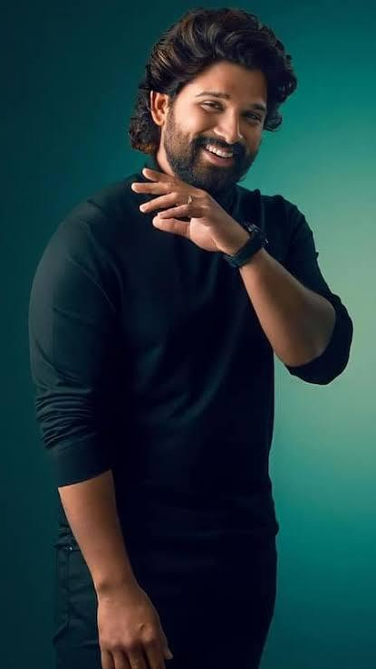

Mahendra Singh Dhoni (born 7 July 1981) is an Indian cricketer known for his batting and wicket-keeping
skills.
He captained India to victories in the 2007 ICC World Twenty20, 2011 Cricket World Cup, and 2013 ICC
Champions
Trophy. Dhoni also led India to win the Asia Cup in 2010 and 2016.

Virat Kohli (born 5 November 1988) is an Indian cricketer known for his batting and former captaincy in all
formats. He is the highest run-scorer in IPL, ranks third in T20I and ODI, and holds the record for the most
ODI centuries. Kohli was a key player in India's 2011 World Cup, 2013 Champions Trophy, and 2024 T20 World
Cup victories.

Ruturaj Dasharath Gaikwad (born 31 January 1997) is an Indian cricketer who captains the Maharashtra cricket
team in T20 and List A formats and Chennai Super Kings in the IPL. He made his international debut for India
in July 2021 against Sri Lanka and led the team to a gold medal at the 2022 Asian Games. Gaikwad was the
leading run-scorer in the 2021 IPL season and the only Indian to score a T20I century against Australia.

Allu Arjun (born 8 April 1982) is an Indian actor in Telugu cinema, known for being one of the highest-paid
actors and a regular on Forbes India's Celebrity 100 list since 2014. He has won several awards, including a
National Film Award, six Filmfare Awards, and three Nandi Awards, and is renowned as one of Indian cinema's
finest dancers. He is popularly referred to as "Stylish Star" and "Icon Star."